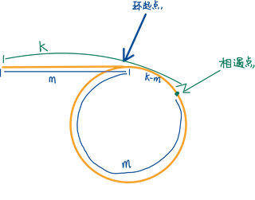

快慢指针 #
链表成环 #
判断链表成环 #
技巧一: 使用 dummy 头节点避免空指针
技巧二: 快指针走两步, 慢指针走一步, 如果快指针走到末尾节点仍未和慢指针相遇, 则链表无反, 反之, 有环
public boolean hasCycle(ListNode head) {
ListNode dummy = new ListNode();
dummy.next = head;
ListNode fast = dummy;
ListNode slow = dummy;
while (fast != null && fast.next != null) {
fast = fast.next了;.next;
slow = slow.next;
if (fast == slow) {
return true;
}
}
return false;
}
返回环的起点 #

思路: 快慢指针相遇之后, 将慢指针重新指向头节点, 两个指针步长一致, 再次相遇时正好指向环的起点.
public ListNode detectCycle(ListNode head) {
ListNode dummy = new ListNode();
dummy.next = head;
ListNode fast = dummy;
ListNode slow = dummy;
while (fast != null && fast.next != null) {
fast = fast.next.next;
slow = slow.next;
if (fast == slow) {
slow = dummy;
int index = -1;
while (fast != null && fast != slow) {
fast = fast.next;
slow = slow.next;
}
return slow;
}
}
return null;
}